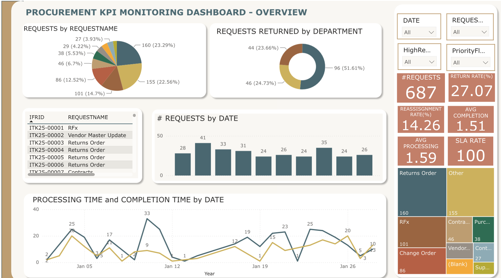

Track your team’s workload and performance at a glance!
An interactive Power BI dashboard to monitor workload and SLA
performance. It helps teams spot delays, balance assignments and
keep operations moving.

An exploration of neighborhood trends, rental diversity, and guest sentiment, empowering informed decisions with advanced SQL techniques.

This project analyzes Iowa liquor market data to identify high-potential locations for retail expansion. Using exploratory analysis and regularized regression models,
it evaluates key market factors, predicts sales potential, and provides data-driven recommendations to support strategic site selection for new storefronts.
This project determines which characteristics of a post on Reddit contribute most to the overall interaction as measured by number of comments.
Collecting data by scraping a website using the Python packages, Using Natural Language Processing (NLP) techniques to preprocess the data and building a classifier and use it to classify each post based on number of comments.
A Python project to identify factors affecting customer satisfaction in aviation. Developed machine learning model that can predict a customer’s satisfaction level based on data related to customer, trip and service features and identify which features contribute significantly to each group.

In this project, I have built a Recurrent Neural Network model using sklearn, keras and seaborn on time series data to predict the temparature. This model is able to remember previous information and use it to make more accurate predictions. It can also handle missing data and long-term dependencies in the input data.

A Power BI project to analyze and visualize the decision making process of selecting a candidate for a position